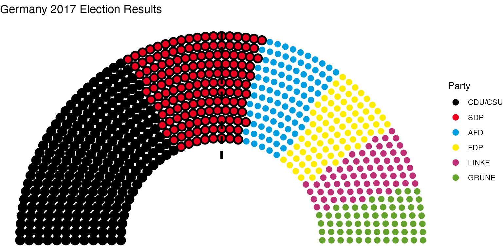
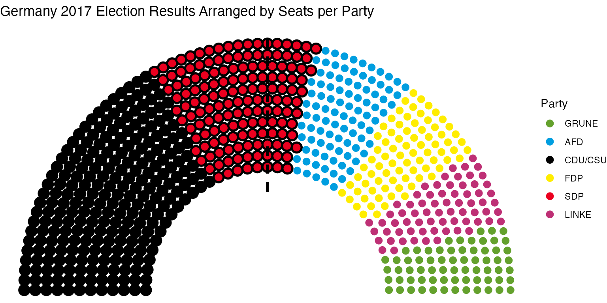

Arranging Parliament Plots
Robert Hickman
2024-05-19
Source:vignettes/h_arrange_parliament_8.Rmd
h_arrange_parliament_8.RmdImproving Plot Information via Plot Order
The provided example data for elections is in order of country, year, winning power, and then seats. However, this need not be so. It’s easy to imagine downloading data in (e.g.) alphabetical order
unformatted_data <- election_data %>%
filter(country == "Germany" & year == "2017") %>%
arrange(party_long)
head(unformatted_data)
#> year country house
#> 1 2017 Germany Bundestag
#> 2 2017 Germany Bundestag
#> 3 2017 Germany Bundestag
#> 4 2017 Germany Bundestag
#> 5 2017 Germany Bundestag
#> 6 2017 Germany Bundestag
#> party_long party_short
#> 1 Alliance 90/The Greens GRUNE
#> 2 Alternative for Germany AFD
#> 3 Christian Democratic Union/Christian Social Union in Bavaria CDU/CSU
#> 4 Free Democratic Party FDP
#> 5 Social Democratic Party SDP
#> 6 The Left LINKE
#> seats government colour
#> 1 67 0 #64A12D
#> 2 94 0 #009EE0
#> 3 246 1 #000000
#> 4 80 0 #FFED00
#> 5 153 1 #EB001F
#> 6 69 0 #BE3075One simple way to deal with this is to arrange the data before piping it through ggparliament. For instance, in the order I prefer (government on the left, starting with the largest party):
formatted_data <- unformatted_data %>%
arrange(-government, -seats)
formatted_parl_data <- formatted_data %>%
parliament_data(.,
parl_rows = 12,
party_seats = .$seats,
type = "semicircle")
german_parliament <- ggplot(formatted_parl_data, aes(x, y, colour = party_short)) +
geom_parliament_seats(size = 2.8) +
geom_highlight_government(government == 1) +
draw_majoritythreshold(n = 355, label = FALSE, type = "semicircle") +
labs(colour="Party",
title="Germany 2017 Election Results") +
theme_ggparliament() +
scale_colour_manual(values = formatted_parl_data$colour,
limits = formatted_parl_data$party_short)
german_parliament
#> Warning in ggplot2::geom_segment(ggplot2::aes(y = 0.8, yend = max(plot$data$y) + : All aesthetics have length 1, but the data has 709 rows.
#> ℹ Please consider using `annotate()` or provide this layer with data containing
#> a single row.
However, for whatever reason this might not be possible, or just undesirable. To deal with this, parliament_data also includes the ability to order the data for plotting using plot_order. If this is left as NULL, no ordering takes place.
german_parliament <- unformatted_data %>%
parliament_data(.,
parl_rows = 12,
party_seats = .$seats,
plot_order = .$seats,
type = "semicircle") %>%
ggplot(., aes(x, y, colour = party_short)) +
geom_parliament_seats(size = 2.8) +
geom_highlight_government(government == 1) +
draw_majoritythreshold(n = 355, label = FALSE, type = "semicircle") +
labs(colour="Party",
title="Germany 2017 Election Results Arranged by Seats per Party") +
theme_ggparliament() +
scale_colour_manual(values = unformatted_data$colour,
limits = unformatted_data$party_short)
german_parliament
#> Warning in ggplot2::geom_segment(ggplot2::aes(y = 0.8, yend = max(plot$data$y) + : All aesthetics have length 1, but the data has 709 rows.
#> ℹ Please consider using `annotate()` or provide this layer with data containing
#> a single row. Given that government is a binary variable, the simplest way to order as in the first plot is to multiple this by the number of seats, i.e.:
german_parliament <- unformatted_data %>%
parliament_data(.,
parl_rows = 12,
party_seats = .$seats,
plot_order = .$seats * .$government,
type = "semicircle") %>%
ggplot(., aes(x, y, colour = party_short)) +
geom_parliament_seats(size = 2.8) +
geom_highlight_government(government == 1) +
draw_majoritythreshold(n = 355, label = FALSE, type = "semicircle") +
labs(colour="Party",
title="Germany 2017 Election Results Arranged by Seats per Party") +
theme_ggparliament() +
scale_colour_manual(values = unformatted_data$colour,
limits = unformatted_data$party_short)
german_parliament
#> Warning in ggplot2::geom_segment(ggplot2::aes(y = 0.8, yend = max(plot$data$y) + : All aesthetics have length 1, but the data has 709 rows.
#> ℹ Please consider using `annotate()` or provide this layer with data containing
#> a single row.